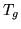

Function
This program is a simple editor for manipulating label files.
Typical examples of its use might be to merge a sequence of
labels into a single composite label or to expand a set of
labels into a context sensitive set. HLED works by
reading in a list of editing commands from an edit
script file and then makes an edited copy of one or more
label files. For multiple level files, edit commands are applied
to the current level which is initially the first (i.e. 1).
Other levels may be edited by moving to the required level using the
ML Move Level command.
Each edit command in the script file must be
on a separate line. The first two-letter mnemonic on each line is the command name and
the remaining letters denote labels17.7.
The commands supported may be divided into
two sets. Those in the first set are used to edit individual
labels and they are as follows
- CH X A Y B
- Change Y in the context of A_B
to X. A and/or B may be a * to match
any context, otherwise they must be defined by a DC command
(see below). A
block of consecutive CH commands are effectively executed in
parallel so that the contexts are those that exist before any of
the commands in the block are applied.
- DC A B C ..
- define the context A as the set of labels
B, C, etc.
- DE A B ..
- Delete any occurrences of labels A
or B etc.
- FI A Y B
- Find Y in the context of A_B
and count the number of occurrences.
- ME X A B ..
- Merge any sequence of labels A
B C etc. and call the new segment X.
- ML N
- Move to label level N.
- RE X A B ..
- Replace all occurrences of labels A
or B etc. by the label X.
The commands in the second set perform global operations on whole
transcriptions. They are as follows.
- DL [N]
- Delete all labels in the current level. If the
optional integer arg is given, then level N is deleted.
- EX
- Expand all labels either from words to phones using the
first pronunciation from a dictionary when it is specified on the
command line otherwise expand labels of the form
A_B_C_D_... into a sequence of separate labels
A B C D ..... This is useful for label formats which
include a complete orthography as a single label or for creating
a set of sub-word labels from a word orthography for a sub-word
based recogniser. When a label is expanded in this way, the
label duration is divided into equal length segments. This can
only be performed on the root level of a multiple level file.
- FG X
- Mark all unlabelled segments of the input
file of duration greater than  msecs with the label X.
The default value for is 50000.0 (=5msecs) but this
can be changed using the -g command line option. This
command
is mainly used for explicitly labelling inter-word silences in
data files for which only the actual speech has been transcribed.
- IS A B
- Insert label A at the start of every
transcription and B at the end. This command is usually
used to insert silence labels.
- IT
- Ignore triphone contexts in CH and FI
commands.
- LC [X]
- Convert all phoneme labels to left context
dependent. If X is given then the first phoneme label
a becomes X-a otherwise it is left unchanged.
- NB X
- The label X (typically a short pause)
should be ignored at word boundaries when using the context
commands LC, RC and TC.
- RC [X]
- Convert all phoneme labels to right context
dependent. If X is given then the last phoneme label
z becomes z+X otherwise it is left unchanged.
- SB X
- Define the label X to be a sentence boundary
marker. This label can then be used in context-sensitive change
commands.
- SO
- Sort all labels into time order.
- SP
- Split multiple levels into multiple alternative label lists.
- TC [X[Y]
- ] Convert all phoneme labels to Triphones, that is
left and right context
dependent. If X is given then the first phoneme label
a becomes X-a+b otherwise it is left unchanged.
If Y is given then the last phoneme label
z becomes y-z+Y otherwise if X is given then it
becomes y-z+X otherwise it is left unchanged.
- WB X
- Define X to be an inter-word label.
This command affects the operation of the LC, RC
and TC commands. The expansion of context labels is
blocked wherever an inter-word label occurs.
The source and target label file formats can be
defined using the -G and -P command line arguments. They can
also be set using the configuration variables SOURCELABEL
and TARGETLABEL. The default for both cases is the HTK format.
Back to HTK site
See front page for HTK Authors